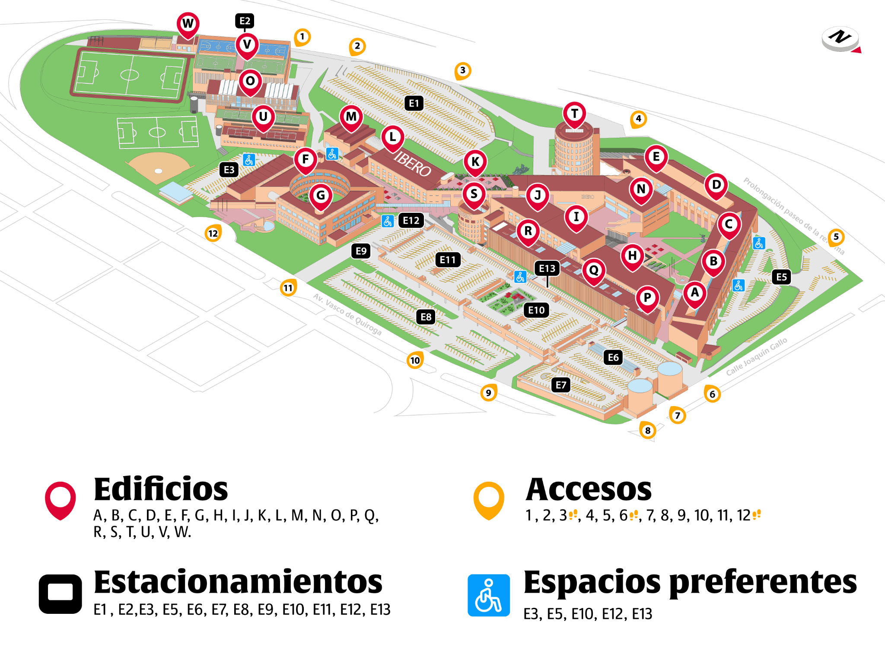

S
Building S
- Auditorium Ignacio EllacuríaBasement
- Auditorium Ernesto Meneses MoralesGround floor
- Auditorium San Ignacio de LoyolaLevel 1
- Auditorium Fernando Bustos BarrenaLevel 2
- Auditorium Xavier Scheifler y de AmézagaLevel 2
XXVIII Mexican Robotics Congress
General program of activities for the XXVIII Mexican Robotics Congress, COMRob 2026.
| Time | Activity |
|---|---|
| 08:00 - 08:30 | Attendee Registration |
| 08:30 - 09:00 | Opening Ceremony, COMRob 2026 Auditorium Ignacio Ellacuría |
| 09:00 - 09:50 |
Keynote Lecture 1
In Search of the Foundational Principle Underlying PID, ADRC, Adaptive Control, and Machine Learning
Speaker: Prof. Zhiqiang Gao
View biography
Auditorium Ignacio Ellacuría |
| 10:00 - 10:50 |
Keynote Lecture 2
Delay-Based Control
Speaker: Prof. Sabine Mondié
View biography
Auditorium Ignacio Ellacuría |
| 10:50 - 11:00 | Break |
| 11:00 - 13:00 | Technical Sessions, Block 1 |
| 13:00 - 13:10 | Break |
| 13:10 - 14:00 |
Keynote Lecture 3
Advances in Robust Control for Unicycle Mobile Robots
Speaker: Prof. Héctor Ríos
View biography
Auditorium Ignacio Ellacuría |
| 14:00 - 16:00 | Lunch Break |
| 16:00 - 16:50 |
Keynote Lecture 4
Service and Collaborative Robotics: Human-in-the-Loop
Speaker: Prof. Antonio Marín Hernández
View biography
Auditorium Ignacio Ellacuría |
| 17:00 - 18:30 | Workshops 1, 2 and 4 |
| 17:00 - 18:30 | Industry Sessions |
| 17:00 - 18:30 | Poster Session |
| 18:30 - 18:40 | End of Day |
| Time | Activity |
|---|---|
| 08:00 - 08:30 | Attendee Registration |
| 08:30 - 09:20 |
Keynote Lecture 5
Brief History and Progress of MFAC Theory
Speaker: Prof. Zhongsheng Hou
View biography
Auditorium Ignacio Ellacuría |
| 09:20 - 10:10 |
Keynote Lecture 6
Bridging the Model-Reality Gap for Safe Robotic Autonomy
Speaker: Prof. Qin Lin
View biography
Auditorium Ignacio Ellacuría |
| 10:10 - 10:30 | Break |
| 10:30 - 12:30 | Technical Sessions, Block 2 |
| 12:30 - 13:00 | IEEE Talk |
| 13:00 - 13:10 | Break |
| 13:10 - 14:00 |
Keynote Lecture 7
Nonlinear Control of a Planar Vertical Take-Off and Landing with a Slung Load
Speaker: Prof. Rogelio Lozano
View biography
Auditorium Ignacio Ellacuría |
| 14:00 - 16:00 | Lunch Break |
| 16:00 - 16:30 | Robotics Competition, Preliminary Rounds |
| 16:30 - 17:00 | Robotics Competition, Short Final |
| 16:00 - 17:30 | Workshops 3 and 4 |
| 17:30 - 19:00 | AMRob Members Meeting |
| 19:00 - 19:10 | End of Day |
| 19:10 - 22:00 | Gala Dinner |
| Time | Activity |
|---|---|
| 08:00 - 08:30 | Attendee Registration |
| 08:30 - 09:20 |
Keynote Lecture 8
Multi-Robot Coordination Under Decentralization and Time Constraints
Speaker: Prof. Juan Diego Sánchez-Torres
View biography
Auditorium José Sánchez Villaseñor |
| 09:20 - 10:10 |
Keynote Lecture 9
Adaptive Control of Mechanical Systems with Friction Without Velocity Measurement: Comparison of Immersion and Invariance and Sliding Mode Designs
Speaker: Prof. Romeo Ortega
View biography
Auditorium José Sánchez Villaseñor |
| 10:10 - 10:30 | Break |
| 10:30 - 12:30 | Technical Sessions, Block 3 - ADRC |
| 12:30 - 13:20 |
Keynote Lecture 10
Motion Coordination of Groups of Mobile Robots: Challenges and Opportunities
Speaker: Prof. Eduardo Gamaliel Hernández-Martínez
View biography
Auditorium José Sánchez Villaseñor |
| 13:20 - 14:10 | Guided Tour of IBERO Engineering Laboratories No registration required. Meeting point: registration desk outside the José Sánchez Villaseñor Auditorium. |
| 14:10 - 16:00 | Lunch Break |
| 16:00 - 17:30 | Closing Ceremony and Awards Auditorium José Sánchez Villaseñor |
Instructor: Prof. Romeo Ortega
Thursday, October 29 and Friday, October 30: 11:00–12:30 and 16:00–17:30 (two sessions per day).
Room LPB03-4 · Building L · Ground floor
Description and registrationChecking availability…Find buildings S, N, E, M, C and L on the map to locate the congress venues.

General INIAT location; specific rooms will be confirmed.